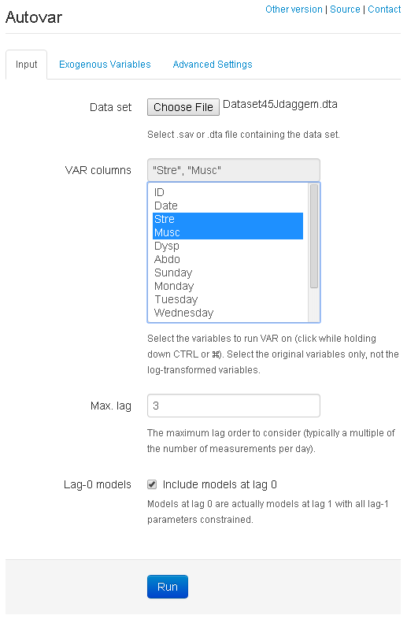
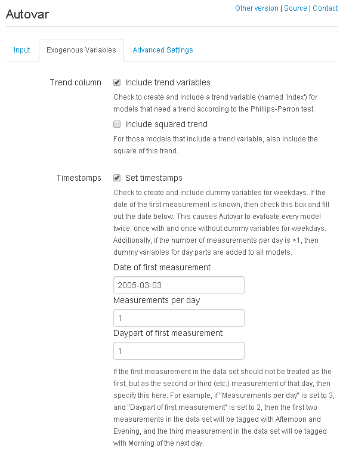

About
Autovar can be used to find VAR models for time series data. Its main functionality is producing a list of VAR models that do not invalidate the model assumptions. Autovar can summarize over the models to provide insight into, e.g., significant contemporaneous correlation and Granger causalities present in the data set.
While Autovar is available as an R package, part of its functionality is exposed through this web application, running some of the exported Autovar functions (depending on the options selected) and showing the results.
Example data sets and use
To reproduce the results from one of the data sets shown in our JBHI paper, please download the Dataset45Jdaggem.dta data set file.
Load the file in Autovar by clicking "Choose file" above. The UI will then change as it reads the columns from the data set. Set it to select the "Stre" and "Musc" columns as shown below.

Here, we opt to include lag 0 models as well by ticking the box.
Optionally, we can provide Autovar with some more information about the data set. For example, if we know that this data set describes a study with a single measurement per day, and the first measurement was completed on the 3rd of March, we can specify this as shown in the image below. Setting timestamps enables Autovar to generate and possibly include dummy variables for days and day parts in its models, to account for cyclity if needed.

Pressing "Run" will then show the output of running a series of functions exported by the Autovar package.
For the selected settings, Autovar will load the data set using load_file, add a trend column using add_trend, add day dummy columns using set_timestamps, plot the variables using visualize (not required), and then look for var models and summarize over then by calling var_main. The source code for all these functions is publicly available on GitHub. Please see the docs section for a full list of available functions.
Another data set that can be analyzed is presented in aug_pp5_da.sav. This data set works with all settings at default. Simply click "Choose file" to select the data set, select "Activity" and "Depression" as VAR columns, and press "Run."